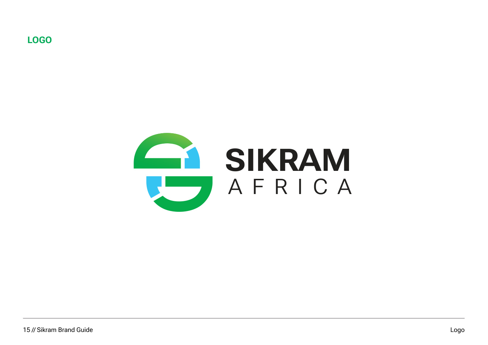
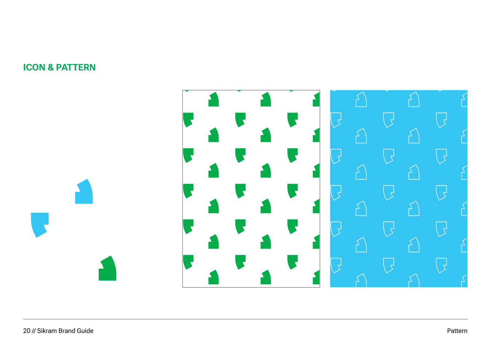
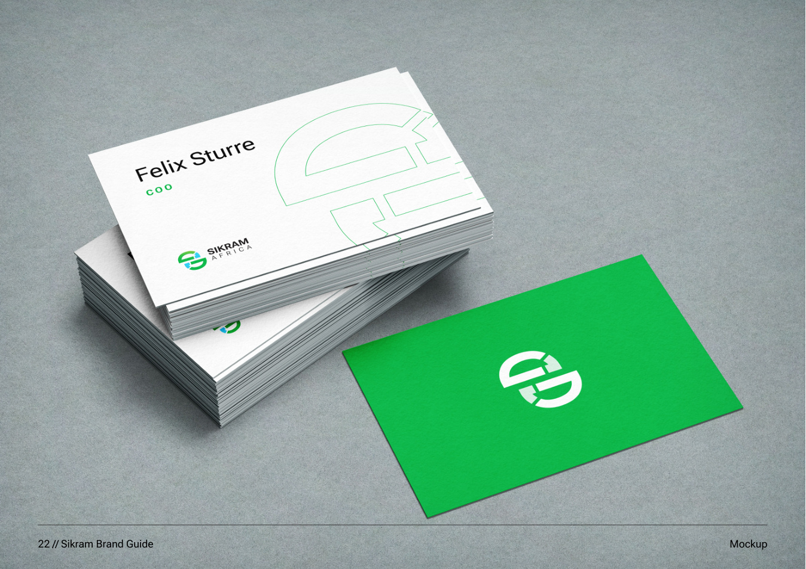
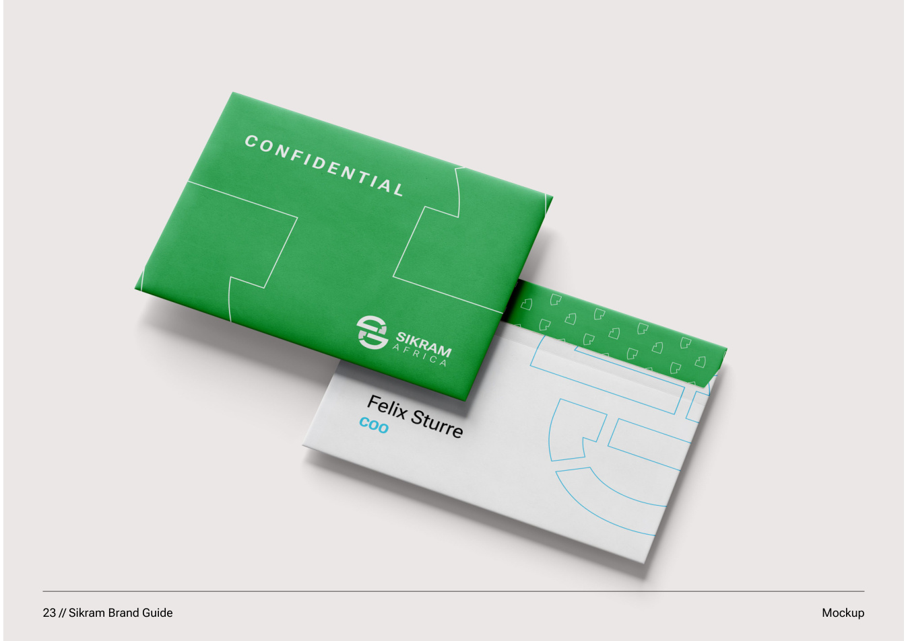
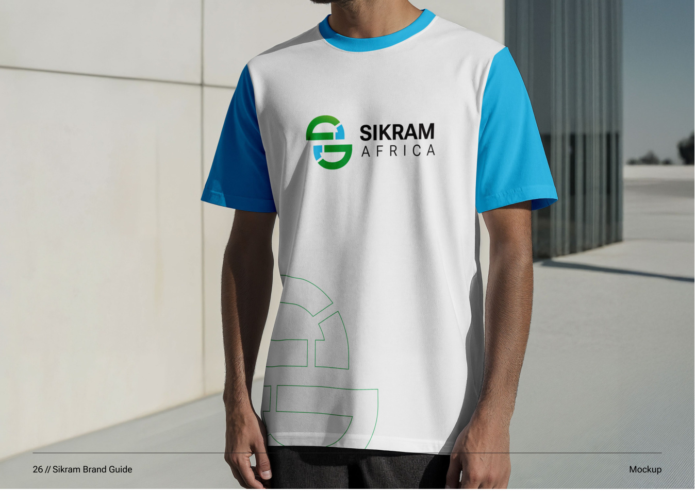
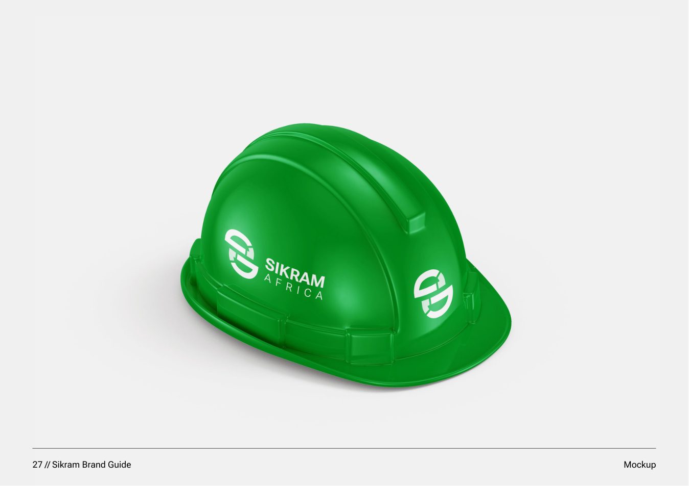

Sikram
Africa.
A flexible visual identity built to carry a consistent brand presence across people, print and everyday touchpoints.
A system with
many touchpoints.
The Sikram Africa brand guide brings together a distinctive logo, a bright colour language, a supporting pattern and practical branded applications.
This selection focuses on the most useful parts of the supplied 16-page guide: the identity, colour and pattern system, and a small set of real-world applications. The full guide is not reproduced page-for-page.
A mark designed
to be recognised.
The logo page presents the primary Sikram Africa lockup and alternate arrangements. The guide also establishes consistent use of the mark across the identity system.

A recognisable visual language

From guidelines
to everyday use.
A curated set of applications showing how the identity moves across staff identification, stationery and branded workwear.



